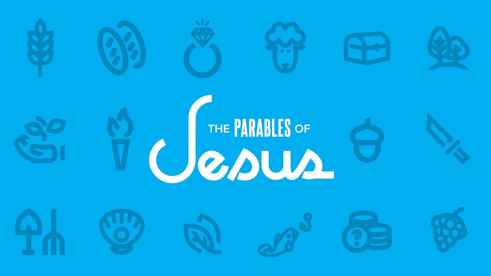

Your browser doesn't support the features required by impress.js, so you are presented with a simplified version of this presentation.
For the best experience please use the latest Chrome, Safari or Firefox browser.

I will open my mouth with a parable; I will utter hidden things, things from of old
Psalm 78:2 NIV